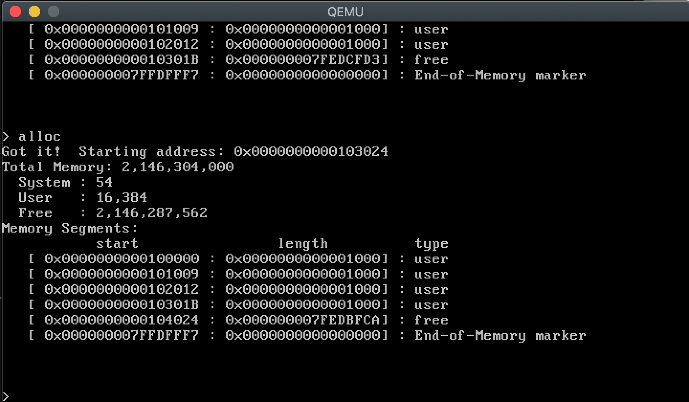
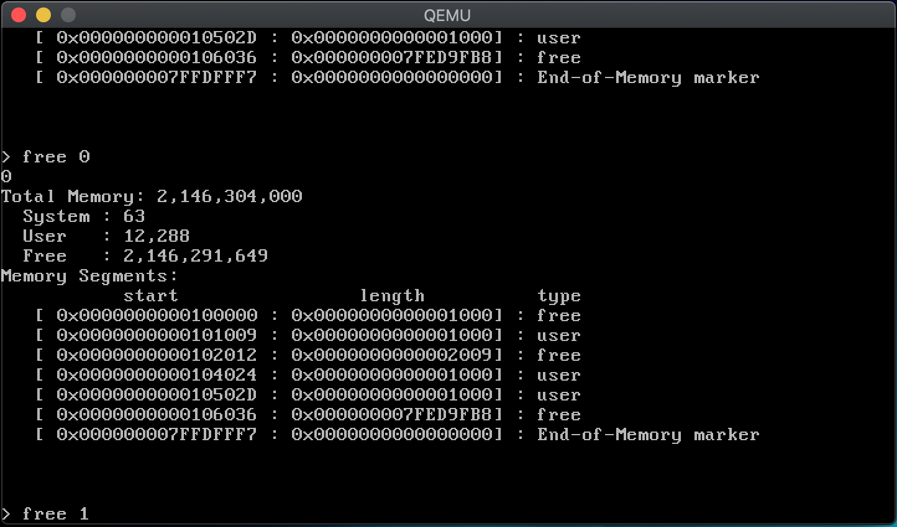

So it’s been about a year since the last time I worked on HOSS, and I’ve decided to start playing around with it again.
The first issue I faced was that my toolchain no longer worked. When I went to rebuild HOSS, I got an error from GCC that it could not find a library that it needed. As you may remember, I was following a tutorial by Carlos Fenollosa that was specific to writing an OS on a Mac. Among the various steps, he talked about building a cross-compiling version of GCC. The version he used was 4.9, but I used a slightly later version, 6.x, for my initial HOSS work. Even at the time I did this, GCC had advanced well beyond version 6, but I specifically chose to use an older version. I don’t quite remember why, other than a vague notion that for some reason later versions of GCC wouldn’t work. I don’t recall why I thought this, but that’s why I stuck with such an old version.
Well, when I got the missing library error, I was kind of screwed. After doing some Googling, I didn’t come up with anything definitive, but I got the impression that the library disappeared when I upgraded my version of mac OS. So I decided to switch to the latest GCC. I downloaded version 9.2, followed Fenollosa’s instructions, and with only a few hiccups, everything worked. The hiccups came from three libraries which I had installed with Brew, but their headers and libs weren’t in the normal include/lib paths. Fortunately the build process told me what to do, which was pass in some extra parameters, and once I did that everything worked.
So with my toolchain once again functioning, I rebuilt HOSS and started working on it again.
The next issue I ran into was that apparently my Bochs configuration was screwed up. It was pointing to a file, hoss-os.img, which wasn’t being generated when I did a make all. At first I thought I had just renamed the file to os-image, but I finally figured out that I had added a target to generate a full 1.44mb floppy image, including os-image in that floppy image. This is what I would use in Bochs and VirtualBox. The problem was, my Makefile target run-bochs had os-image as a dependency, not image which is what generated hoss-os.img. So I fixed that, and everything worked. And I bumped up my Bochs configuration to 2gb ram to match what I was doing in QEMU.
Memory Managerment
So where I stopped before was in the middle of working on my memory manager. I had written a simple memory manager using a simple First Fit algorithm, but I hadn’t thoroughly tested it. I have a command shell program. It does very little, just presents a command prompt where you can type anything. And it only supports a few commands, none of them actually useful for anything other than testing my memory manager. Two commands, alloc and free, simply allocate 4k of ram and then free it. You could call alloc multiple times, and it would allocate multiple 4k blocks, and it would display the allocated segment blocks.

The problem was that free would only free the last allocated block of memory. But that wouldn’t test all the scenarios that I needed to test, of course. So my first change was to make it so that it would free the allocated blocks in reverse order, i.e., you could call it multiple times and it would free the allocated blocks in the reverse order of how you allocated them. Doing so and running some tests proved that my memory manager could allocate and free blocks without losing track.
But this didn’t really cover a more real world scenario, of course. I didn’t know what would happen if I, say, allocated three blocks, and then freed the one in the middle. The next time I allocated a 4k block, would it pick the one in the middle? Would it add it to the end, skipping the empty block? I needed to be able to arbitrarily free any memory block in whatever oder I chose.
This took more work than I expected. The first issue was that my simple command interpreter really just did simple string matching to execute commands. This meant that it couldn’t support parameters, other than where the parameter was essentially part of the command. For example, I had a command called memmap which would show me the memory map of usable memory that the system provided. But I also had memmap full, which would also show unusable/reserved memory. But this parameter was just done through simple string matching. There was no real parsing going on. But to get free to do what I needed, I would have to do some parsing.
Not a big deal, of course, but one of the aspects of writing your own operating system is that you have no library of functions to fall back on except whatever you write. So deciding that free would accept an optional numeric parameter, which would be the index of the block you wanted to free, I ended up having to write my own versions of strtok and atoi and added these to my libc module.
Once I did that, updating my command shell was pretty simple, so that now I could do this:

I am pleased to report that my memory manager passed every test I came up with. In the image above, for example, you can see on free block of size 2009. This is because I had allocated a bunch of blocks and then removed two in the middle, which it then correctly blended into one free block. Another test I ran, though it’s not obvious from this screenshot, is to allocate a block after having freed some, and it correctly allocated the new block in the middle of existing blocks, rather than going to the end of the memory chain. I still have some more work to do on my command shell and some more testing, but so far the memory manager is looking pretty good.
One small semi-ironic part that came up during this work is that I don’t currently have any way of dynamically allocating memory from within the shell. Ideally, of course, I could just have it use the memory manager, but my memory manager is a chunk allocator, meaning it only allocates into bigger blocks of 4k and up. I assumed applications would use a suballocator to divide this memory up into smaller chunks for application use. But I don’t have such a suballocator written, so right now there’s no way for the shell to dynamically allocate, say, 20 bytes for a string. I’ll probably finish my testing on the HOSS memory manager, and then build a simple suballocator for the shell. Hopefully I can build it in such a way that I can reuse it for applications.